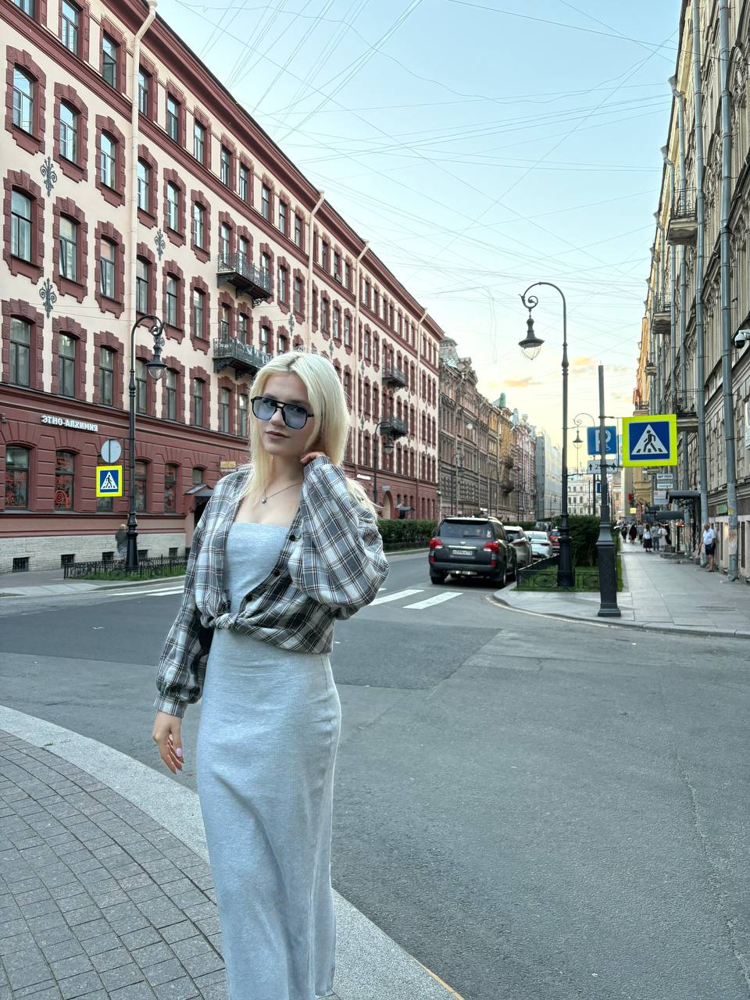
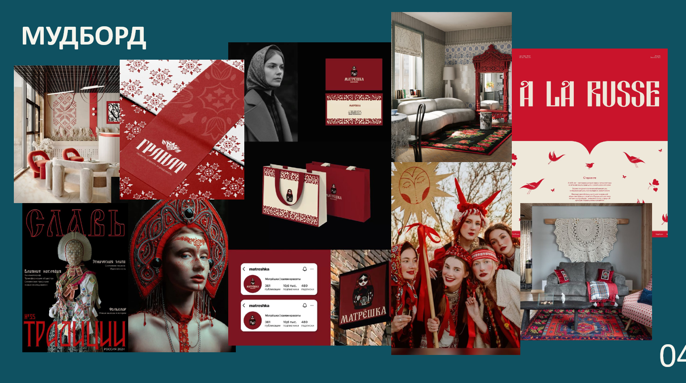
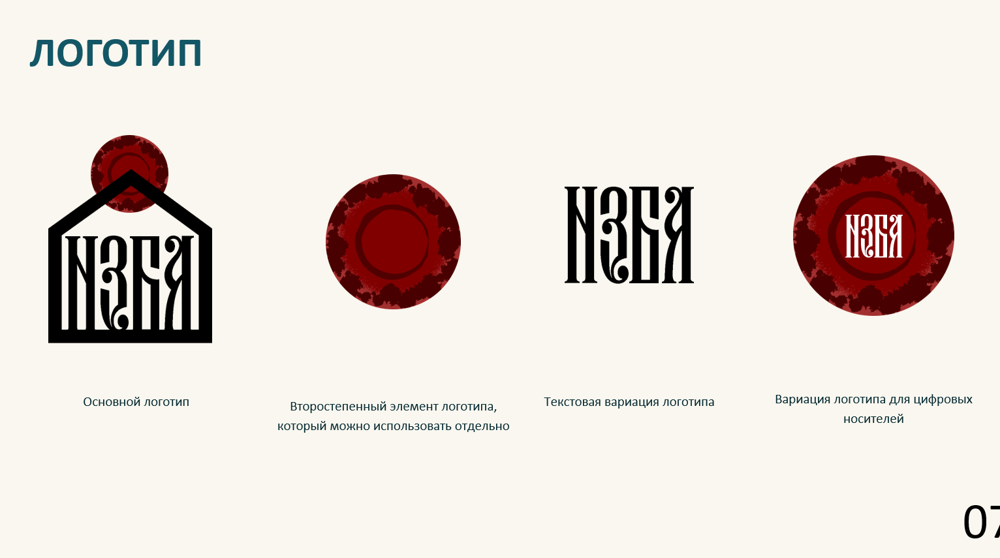
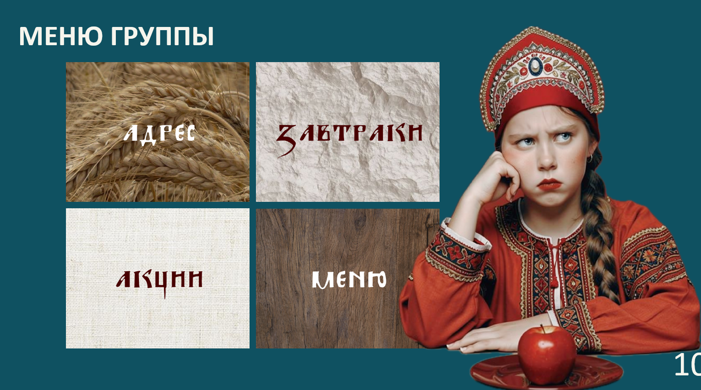
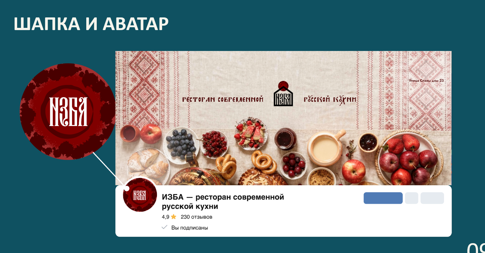
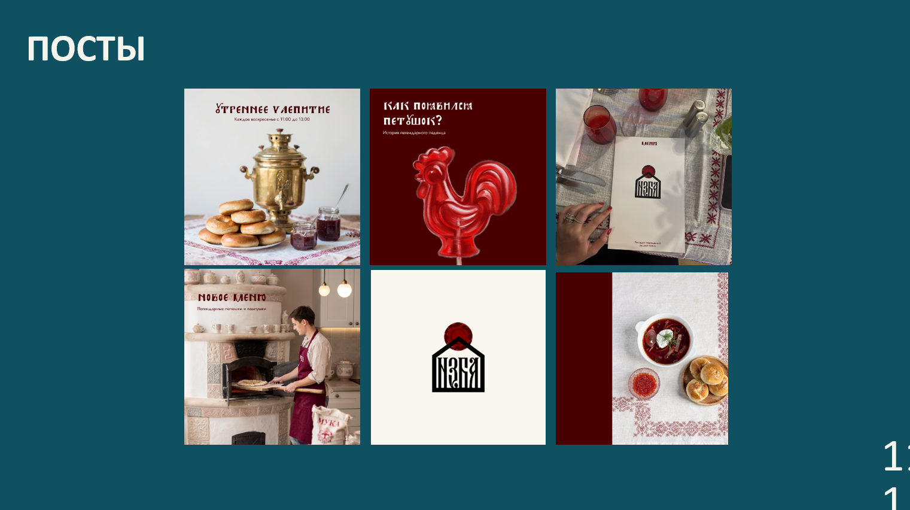

ПОРТФОЛИО / 2025—2026
Вера
Соловьёва
Студентка дизайна, которая собирает визуальные истории для брендов, пространств и цифровых продуктов.
Смотреть проект ↘
design / 01Дизайн начинается
с ощущения.
Я учусь видеть не только форму, но и настроение, которое она создаёт. Мне интересны айдентика, веб-дизайн и визуальные системы, которые делают идею понятной.
Изба
ВК
Оформление сообщества
ресторана русской кухни





«Изба» — проект оформления VK для ресторана современной русской кухни. Я собрала узнаваемую визуальную систему на основе традиционных мотивов, красно-белой палитры и тёплой атмосферы семейного места.
Обсудить проект ↗Умею
собирать
Идея, настроение и система образов.
Айдентика, композиция, типографика.
Прототипы и простые адаптивные страницы.
Давайте
поговорим
Открыта к учебным коллаборациям, проектам и новым знакомствам.
soloviovavera5@mail.ruTelegram @vera_vsv